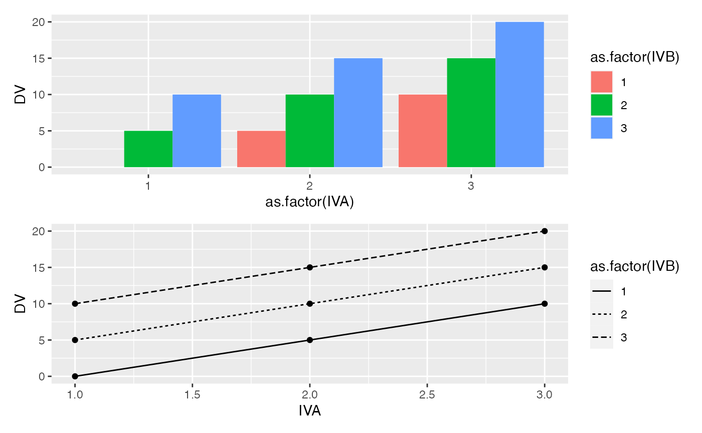
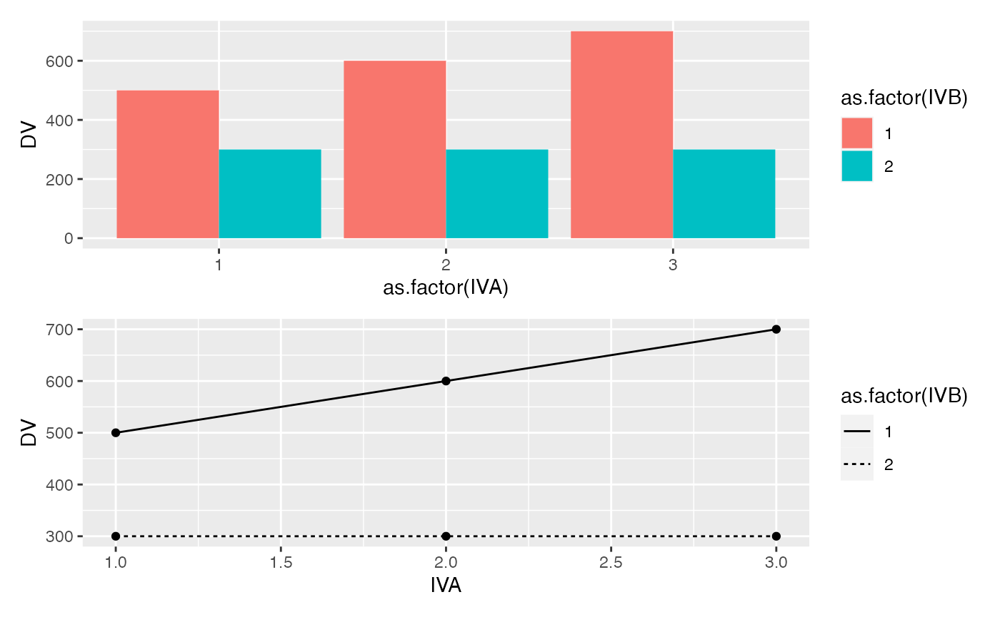

Lab 8 Contrast Analyses
Matthew J. C. Crump
2/1/2021
Lab8_Contrasts.RmdReadings
Chapter 17 (Abdi et al., 2009).
Overview
This lab supplements the chapter on factorial designs and contrast analyses that discusses statistical techniques for interrogating specific patterns among means in factorial designs.
Fundamental to these ideas is a strong understanding of the concepts of main effect and interactions. In the current lab we build on the score model concept and use R to examine properties of main effects and interactions in greater detail.
Concept I: Generating main effect and interactions
In this section we use R to generate predicted patterns of main effects and interactions for a design with two independent variables.
The following code chunk shows how the score model for a fixed design (model I) can be coded in R to produce any pattern of main effects and interactions, along with a graphical display of the patterns.
#load libraries
library(tibble)
library(ggplot2)
library(patchwork)
# define 2-factor score model
grand_mean <- 50
A <- c(0,5,10,15,20,25,50)
B <- c(0,5,-15)
AB <- rep(0,length(A)*length(B))
# create design table
model_data <- tibble()
for(i in 1:length(A)){
for(j in 1:length(B)){
IVA <- i
IVB <- j
DV <- grand_mean+A[i]+B[j]+AB[(i-1)*length(B)+j]
sc_GM <- grand_mean
sc_A <- A[i]
sc_B <- B[j]
sc_AB <- AB[(i-1)*length(B)+j]
row_entry <- tibble(IVA,IVB,DV,
sc_GM,sc_A,sc_B,sc_AB)
model_data <- rbind(model_data,row_entry)
}
}
knitr::kable(model_data)| IVA | IVB | DV | sc_GM | sc_A | sc_B | sc_AB |
|---|---|---|---|---|---|---|
| 1 | 1 | 50 | 50 | 0 | 0 | 0 |
| 1 | 2 | 55 | 50 | 0 | 5 | 0 |
| 1 | 3 | 35 | 50 | 0 | -15 | 0 |
| 2 | 1 | 55 | 50 | 5 | 0 | 0 |
| 2 | 2 | 60 | 50 | 5 | 5 | 0 |
| 2 | 3 | 40 | 50 | 5 | -15 | 0 |
| 3 | 1 | 60 | 50 | 10 | 0 | 0 |
| 3 | 2 | 65 | 50 | 10 | 5 | 0 |
| 3 | 3 | 45 | 50 | 10 | -15 | 0 |
| 4 | 1 | 65 | 50 | 15 | 0 | 0 |
| 4 | 2 | 70 | 50 | 15 | 5 | 0 |
| 4 | 3 | 50 | 50 | 15 | -15 | 0 |
| 5 | 1 | 70 | 50 | 20 | 0 | 0 |
| 5 | 2 | 75 | 50 | 20 | 5 | 0 |
| 5 | 3 | 55 | 50 | 20 | -15 | 0 |
| 6 | 1 | 75 | 50 | 25 | 0 | 0 |
| 6 | 2 | 80 | 50 | 25 | 5 | 0 |
| 6 | 3 | 60 | 50 | 25 | -15 | 0 |
| 7 | 1 | 100 | 50 | 50 | 0 | 0 |
| 7 | 2 | 105 | 50 | 50 | 5 | 0 |
| 7 | 3 | 85 | 50 | 50 | -15 | 0 |
# generate plots
bar_graph <- ggplot(model_data,
aes(y=DV,
x=as.factor(IVA),
fill=as.factor(IVB)))+
geom_bar(stat='identity', position='dodge')
line_graph <- ggplot(model_data,
aes(y=DV,
x=IVA,
linetype=as.factor(IVB)))+
geom_line()+
geom_point()
(bar_graph/line_graph)One or two main effects and no interaction
It is important to recognize that just because a design uses multiple independent variables, it is not necessarily the case that interactions will occur.
For example, consider the following toy example. We will conduct an experiment, and the first IV will have three levels (0,5,10), indicating how much money participants are paid when they complete the experiment. The second IV will also have three levels (0,5,10), indicating how much bonus money participants are paid when they complete the experiment. The DV will be how much money in total the participant is given by the experimenter at the end of the experiment.
Consider how we would represent this experiment using the code from above. First, we program in the expected means for each level of the first and second IV. Second, we do not program an interaction term.
# define 2-factor score model
grand_mean <- 10
A <- c(-5,0,5)
B <- c(-5,0,5)
AB <- rep(0,length(A)*length(B))
# create design table
model_data <- tibble()
for(i in 1:length(A)){
for(j in 1:length(B)){
IVA <- i
IVB <- j
DV <- grand_mean+A[i]+B[j]+AB[(i-1)*length(B)+j]
sc_GM <- grand_mean
sc_A <- A[i]
sc_B <- B[j]
sc_AB <- AB[(i-1)*length(B)+j]
row_entry <- tibble(IVA,IVB,DV,
sc_GM,sc_A,sc_B,sc_AB)
model_data <- rbind(model_data,row_entry)
}
}
knitr::kable(model_data)| IVA | IVB | DV | sc_GM | sc_A | sc_B | sc_AB |
|---|---|---|---|---|---|---|
| 1 | 1 | 0 | 10 | -5 | -5 | 0 |
| 1 | 2 | 5 | 10 | -5 | 0 | 0 |
| 1 | 3 | 10 | 10 | -5 | 5 | 0 |
| 2 | 1 | 5 | 10 | 0 | -5 | 0 |
| 2 | 2 | 10 | 10 | 0 | 0 | 0 |
| 2 | 3 | 15 | 10 | 0 | 5 | 0 |
| 3 | 1 | 10 | 10 | 5 | -5 | 0 |
| 3 | 2 | 15 | 10 | 5 | 0 | 0 |
| 3 | 3 | 20 | 10 | 5 | 5 | 0 |
# generate plots
bar_graph <- ggplot(model_data,
aes(y=DV,
x=as.factor(IVA),
fill=as.factor(IVB)))+
geom_bar(stat='identity', position='dodge')
line_graph <- ggplot(model_data,
aes(y=DV,
x=IVA,
linetype=as.factor(IVB)))+
geom_line()+
geom_point()
(bar_graph/line_graph) This is a silly design where an interaction should, by definition, be impossible. There are two independent sources of money, and the total amount of money received by each subject is the sum of both sources. In this scenario, the concept of an interaction would occur if one of the combinations of IVA and IVB levels somehow produces more or less than the sum of the levels. For example, if the subjects who received 5 dollars in level 2 of IVA, and 5 dollars bonus from level 2 of IVB, somehow were paid more than 10 dollars in total, or less than 10 dollars in total, there would be an interaction. However, in our mock scenario, we are stipulating that 5+5 = 10, so we have created a situation where an interaction is not possible.
Two main effects and an interaction
Let’s consider an example from a classic demonstration in visual search. In a visual search task subjects are shown a visual display and asked to find a target among distractors.
For example, the task could be to find the T, and report whether it is rotated to the left or to the right. Some example displays are shown below.
knitr::include_graphics('imgs/Factorial/visual_search.png')
The figure depicts a 3x2 design, with three levels of set-size (10,20, 30), and two levels of popout (no popout vs color popout),
A classic main effect in visual search involves set-size. In general, it takes longer to finder a target as the number of distractors (set-size) increases.
However, it is possible modulate the set-size effect. For example, the set-size effect would be very pronounced in the no color popout condition. However, in the color popout condition, the target just “pops” out, and it is very easy to find. In this case, the number of distractors (set-size) has a very small or possibly no effect on search time.
Let’s implement these ideas to produce expected patterns of main effects and interactions for this design. We assume it takes about 500ms to find a target, and that the set size effect changes the time by about 10ms per distractor.
# define 2-factor score model
grand_mean <- 500
A <- c(-100,0,100)
B <- c(100,-100)
AB <- c(0,0,0,-100,0,-200)
# create design table
model_data <- tibble()
for(i in 1:length(A)){
for(j in 1:length(B)){
IVA <- i
IVB <- j
DV <- grand_mean+A[i]+B[j]+AB[(i-1)*length(B)+j]
sc_GM <- grand_mean
sc_A <- A[i]
sc_B <- B[j]
sc_AB <- AB[(i-1)*length(B)+j]
row_entry <- tibble(IVA,IVB,DV,
sc_GM,sc_A,sc_B,sc_AB)
model_data <- rbind(model_data,row_entry)
}
}
knitr::kable(model_data)| IVA | IVB | DV | sc_GM | sc_A | sc_B | sc_AB |
|---|---|---|---|---|---|---|
| 1 | 1 | 500 | 500 | -100 | 100 | 0 |
| 1 | 2 | 300 | 500 | -100 | -100 | 0 |
| 2 | 1 | 600 | 500 | 0 | 100 | 0 |
| 2 | 2 | 300 | 500 | 0 | -100 | -100 |
| 3 | 1 | 700 | 500 | 100 | 100 | 0 |
| 3 | 2 | 300 | 500 | 100 | -100 | -200 |
# generate plots
bar_graph <- ggplot(model_data,
aes(y=DV,
x=as.factor(IVA),
fill=as.factor(IVB)))+
geom_bar(stat='identity', position='dodge')
line_graph <- ggplot(model_data,
aes(y=DV,
x=IVA,
linetype=as.factor(IVB)))+
geom_line()+
geom_point()
(bar_graph/line_graph)
Concept II: Simulated power analysis
The following code block gives an example of simulating data for a 2x2 design that can be used to estimate power (proportion of experiments returning a significant result) for each main effect and interaction.
# N per group
N <- 40
A_pvalue <- c()
B_pvalue <- c()
AB_pvalue <- c()
for(i in 1:1000){
IVA <- rep(rep(c("1","2"), each=2),N)
IVB <- rep(rep(c("1","2"), 2),N)
DV <- c(replicate(N,c(rnorm(1,0,1), # means A1B1
rnorm(1,0,1), # means A1B2
rnorm(1,.5,1), # means A2B1
rnorm(1,.5,1) # means A2B2
)))
sim_df <- data.frame(IVA,IVB,DV)
aov_results <- summary(aov(DV~IVA*IVB, sim_df))
A_pvalue[i]<-aov_results[[1]]$`Pr(>F)`[1]
B_pvalue[i]<-aov_results[[1]]$`Pr(>F)`[2]
AB_pvalue[i]<-aov_results[[1]]$`Pr(>F)`[3]
}
length(A_pvalue[A_pvalue<0.05])/1000
#> [1] 0.886
length(B_pvalue[B_pvalue<0.05])/1000
#> [1] 0.045
length(AB_pvalue[AB_pvalue<0.05])/1000
#> [1] 0.041Lab 8 Generalization Assignment
Note: there was a technical glitch for this video, where I zoomed to close on the RStudio window. Most of the screencast is visible, but sometimes I am working on code that is out of view. As always, the .Rmd files for the solutions are on the github repository for this course, so you can check those out too.
Instructions
Your assignment instructions are the following:
- Work inside the new R project for stats II that you created
- Create a new R Markdown document called “Lab8.Rmd”
- Use Lab8.Rmd to show your work attempting to solve the following generalization problems. Commit your work regularly so that it appears on your Github repository.
- For each problem, make a note about how much of the problem you believe you can solve independently without help. For example, if you needed to watch the help video and are unable to solve the problem on your own without copying the answers, then your note would be 0. If you are confident you can complete the problem from scratch completely on your own, your note would be 100. It is OK to have all 0s or 100s anything in between.
- Submit your github repository link for Lab 8 on blackboard.
Problems
- Consider a 2x2 design. Assume the DV is measured from a normal distribution with mean 0, and standard deviation 1. Assume that the main effect of A causes a total shift of .5 standard deviations of the mean between the levels. Assume that level 1 of B is a control, where you expect to measure the standard effect of A. Assume that level 2 of B is an experimental factor intended to reduce the effect of A by .25 standard deviations.
A. create a ggplot2 figure that depicts the expected results from this design (2 points)
Conduct simulation-based power analyses to answer the questions.
B. How many subjects are needed to detect the main effect of A with power = .8? (2 points)
C. How many subjects are needed to detect the interaction effect with power = .8? (2 points)
Bonus point question:
B1. Create a power curve showing how power for the interaction effect in this example is influenced by number of subjects. Choose a range of N from 25 to 800 (per cell) and run a simulation-based power analysis for increments of 25 subjects. Then plot the results using ggplot2 (2 points).